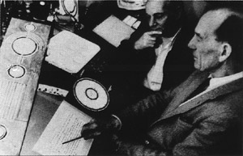
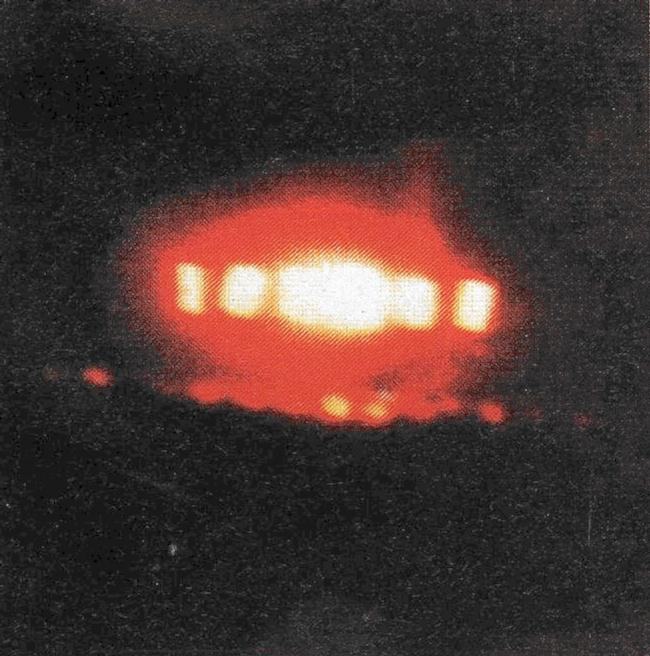

A Margut (Ardennes), 1 témoin observe le passage à 2
reprises et à 15 mn d'intervalle de 3 points lumineux en triangle, pointe vers l'arrière, avec
2 points rouges vers l'avant et 1 point blanc vers l'arrière suivant le sens du déplacement. La vitesse est lente et le déplacement silencieuxSEPRA: PAN classé C.
Une semaine après la sortie en France de son livre Enquêtes sur des extraterrestres qui sont
déjà parmi nous,Jean-Pierre Petit reçoit une convocation de la Direction du CNRS.
Bower et Chorley travaillant sur un nouveau dessin de crop circle

Doug Bower et Dave Chorley (ci-contre) déclarent qu'ils ont réalisé 200 crop circles depuis 15 ans.
Les caméras de la navette spatiale Discovery (vol STS-48) filment, au-dessus de l'Australie occidentale, les
mouvements de mystérieux objets brillants. Le plus spectaculaire de ces objets apparaît vers le haut de l'image,
près de l'horizon terrestre. L'image agrandie montre l'objet qui se déplace vers la gauche avant que l'écran ne soit
illuminé par un éclat de lumière. Puis l'objet change de direction en accélérant. Quelques secondes plus tard, un
autre objet passe devant la caméra et se dirige vers l'espace. Le professeur Jack Kasher, de l'Université du
Nebraska et collaborateur de la NASA, a étudié ces séquences et en a tiré un rapport de
105 pages. Conclusions : Selon la NASA, il s'agissait de cristaux de glace, ce qui est
physiquement impossible car les cristaux de glace ne pourraient changer de direction d'une telle manière. Nos
calculs montrent que si les objets se situaient à 16 km de la navette, le plus gros a accéléré de 0 à 4023 km/h en
.
Photographie prise par Zita Rodriguez à Zacatelco (Tlaxcala, Méxique)

Dans le cadre des manifestations de la fête nationale mexicaine, un défilé d'avions de chasse est organisé au-dessus
de la capitale, Mexico. Un objet mystérieux sort alors des nuages, en arrière plan du défilé aérien, volant la
vedette aux pilotes. L'événement se répétera l'année suivante au même moment, puis en , lors d'un
défilé d'hélicoptères.
A Cournon d'Auvergne (Puy-de-Dôme), 1 ouvrier rentrant de
son travail aperçoit 1 lumière blanche très brillante dans le ciel pendant près de 1 h. 2 autres témoins appelent
également la brigade pour leur signaler le même phénomène SEPRA: PAN classé C.